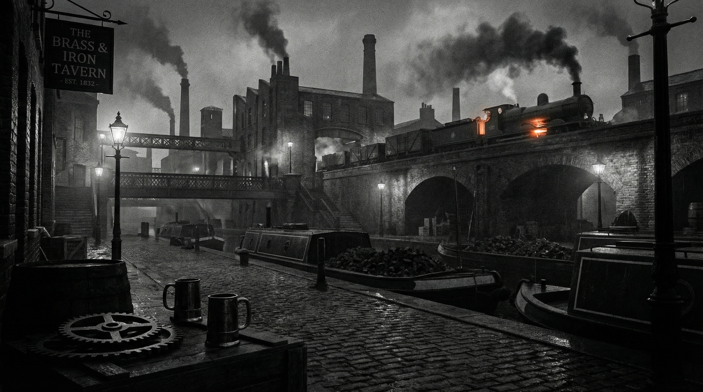
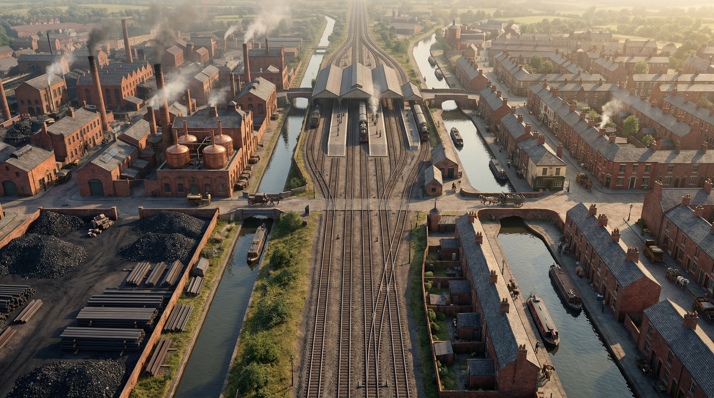
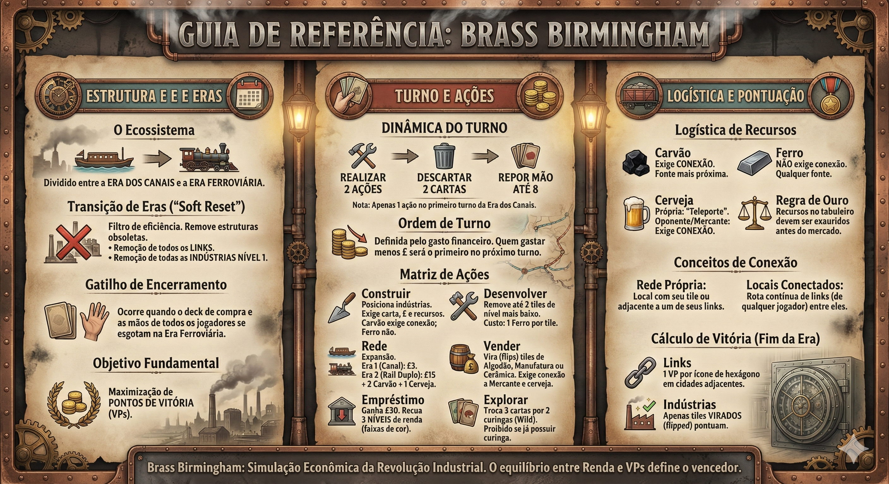

1. Visão Estratégica
Simulação econômica da Revolução Industrial. Eficiência = Rede Logística Resiliente, não apenas capital bruto.
Objetivo Fundamental
Maximização de Pontos de Vitória (VPs) ao término da Era Ferroviária.

O sucesso depende da sincronia entre o tempo de desenvolvimento industrial e a expansão de rotas, visto que os recursos (carvão e ferro) possuem existência física no mapa e dependem de infraestrutura conectada para gerar valor.
O gatilho de encerramento ocorre quando o deck de compra e as mãos de todos os jogadores se esgotam.
Análise de Impacto ("So What?"):
O equilíbrio entre progressão de Renda (sustentabilidade operacional) e VPs (triunfo final) é o que define o vencedor. Investir cedo demais em VPs sem uma base de renda sólida paralisa o jogador em rodadas críticas; entretanto, focar exclusivamente em renda na fase final é um erro estratégico, pois apenas indústrias "viradas" (flipped) e links de rede garantem a pontuação necessária para a vitória.
Eras

- Era dos Canais
- Era Ferroviária
Conceitos Estruturais
Localidade: Permite construir qualquer indústria válida na cidade nomeada, independentemente de conexão.
Indústria: Permite construir o ícone correspondente apenas se o local fizer parte de sua Rede Própria.
Análise de Impacto:
Na Era dos Canais, a restrição de uma indústria por cidade dita o ritmo de espalhamento geográfico. Ignorar essa limitação impede a criação de redundâncias necessárias para a Era Ferroviária, onde essa trava é removida.
Dinâmica & Ações
Construir
Posiciona indústrias. Exige carta válida, custo em £ e recursos.
Rede
Expansão de conexões (Canais ou Trilhos).
Desenvolver
Remove tiles de nível baixo para acessar pontuações maiores.
Vender
Vira tiles de Algodão, Manufatura ou Cerâmica.
Empréstimo
Injeção de capital imediato. Reduz Renda.
Explorar
Sacrifica cartas por Curingas (Wild).
Matriz de Eficiência de Ações
| Ação | Tipo Básico | Custo Básico | Tipo Melhorado | Custo Melhorado |
|---|---|---|---|---|
| Construir | Carta de Localidade | Sem exigência de rede | Carta de Indústria | Exige Rede Própria |
| Rede | Canal (Era 1) | £3 | Rail Duplo (Era 2) | £15 + 2 Carvão + 1 Cerveja |
| Logística | Link Simples | £5 + 1 Carvão | - | - |
Insight:
A gestão do descarte é o recurso limitador invisível. Ações como Scout ou passar o turno sem construir consomem o "combustível" de cartas.
Logística de Recursos
Carvão
CONEXÃO EXIGIDAConsome da fonte conectada mais próxima. Se não houver no mapa, compra-se do mercado se houver conexão a um Mercante.
Ferro
SEM CONEXÃOConsome de qualquer fonte no mapa ou do mercado global.
Cerveja
Própria: Pode ser "teleportada".
Oponente/Mercante: Exige Conexão.
Fim de Rodada
- Ordem de Turno (baseado no gasto de £).
- Coleta de Renda: Baseada no nível/faixa de cor.

Cálculo de Vitória (VPs)
-
Links 1 VP por ícone de hexágono em cidades adjacentes. Você pontua ícones de indústrias de qualquer jogador.
-
Indústrias Apenas tiles virados (flipped) pontuam.
Protocolo Mautoma (Solo)
Protocolos de Prevenção de Erros
Regra de Ouro do Overbuild
Restrição de Exploração (Scout)
Custo de Desenvolvimento
Exceção: Pottery Nível 1

Diagrama de Auxílio Visual (aid.png)
Tutorial em Vídeo (video.mp4)